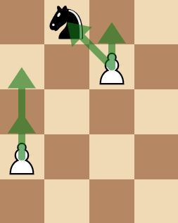
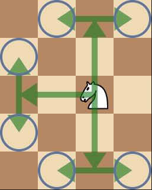
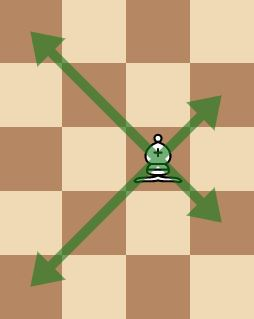
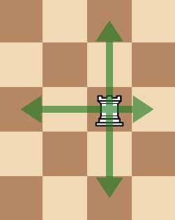
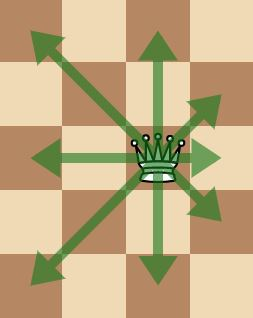
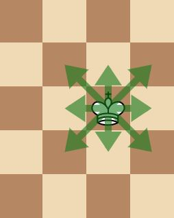

| Pawn |
1 Point |
General: Pawns can move forward one square, if that square is unoccupied. If it has not yet moved,
the pawn has the option of moving two squares forward.
Capture:
Pawns are the only pieces that capture differently from how they move. They can capture an enemy piece on
either of the two spaces diagonal to the space in front of them. If the pawn reaches the eighth rank, it can
be promoted to a knight, bishop, rook, or queen.
|
 |
| Knight |
3 Points (In general, Knights are considered more valuable than Bishops at the
beginning of the game, as the board is crowded with other pieces |
Knights can move one square along any rank or file and then again at an angle. The knight´s movement can
also be viewed as an “L” or “7″ shape. |
 |
| Bishop |
3 Points (In general, Bishops are considered more valuable than Knights at the end of
the game, as the board begins to clear out |
Bishop can move any number of vacant squares in any diagonal direction. |
 |
| Rook (Castle) |
5 Points |
Rook can move any number of vacant squares vertically or horizontally. See advanced rules for castling.
|
 |
| Queen |
9 Points |
Queen can move any number of vacant squares diagonally, horizontally, or vertically. |
 |
| King |
N/A |
King can move exactly one square horizontally, vertically, or diagonally. At most once in every game, each
king is allowed to make a special move, known as castling. See advanced rules for castling |
 |